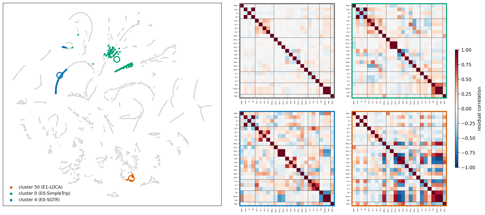
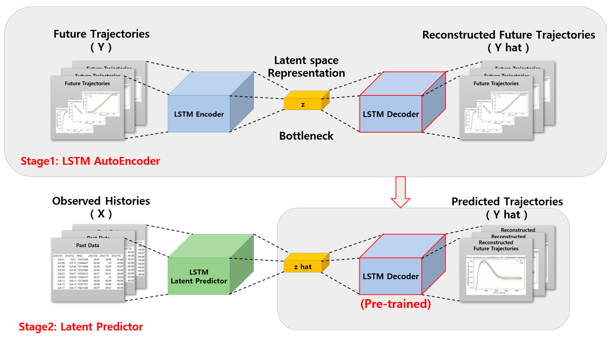
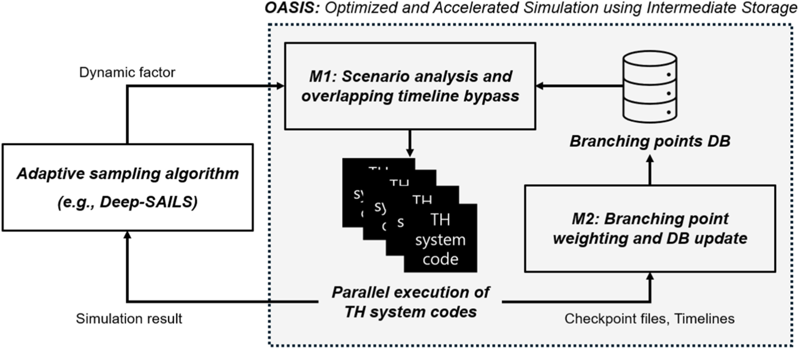
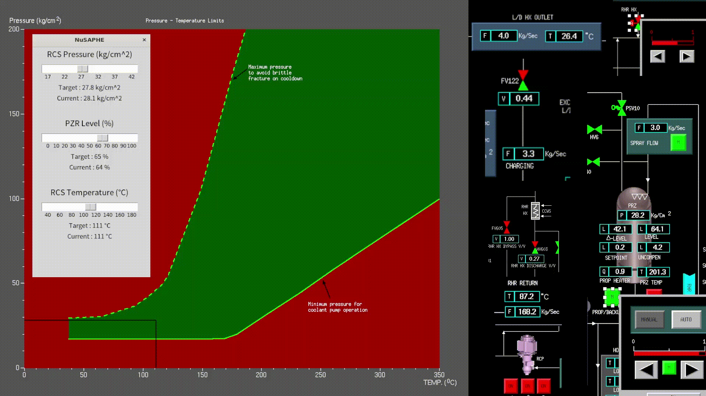
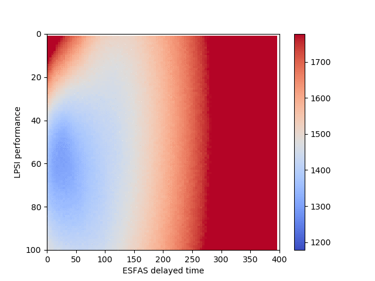

Fig. — Cluster-wise analysis of reconstruction residuals
I am Junyong Bae. I build deep-learning methods for NPP safety: risk assessment and operator support systems built on trustworthy AI.
Professional Experience
Risk Assessment Research Division, Korea Atomic Energy Research Institute (KAERI)
Intelligent accident scenario prediction and response, under the V-SMR project. Advisor: Hyeonmin Kim, Ph.D.
Nuclear Safety Assessment and Plant HMI Evolution Lab, UNIST
Cyber-attack detection with deep-learning models; AI-supported dynamic PSA. Advisor: Prof. Seung Jun Lee.
Education
Ulsan National Institute of Science and Technology (UNIST)
Dissertation: Deep Learning-based Optimized Simulation and Consequence Estimation with Neural Network Uncertainty for Dynamic Risk Assessment of Nuclear Power Plants. Advisor: Prof. Seung Jun Lee.
UNIST — minor in Electrical Engineering
Graduated cum laude.
Accelerating the labour-intensive parts of plant risk assessment with AI: simulation optimization, automatic event tree generation, and surrogate models for computationally heavy accident codes.
As main control rooms go digital, AI opens a new route to operator support — especially for advanced reactors, where one crew may face multiple modules and remote siting.
AI for safety-critical systems has to earn its trust: explainable AI, case-based reasoning, uncertainty quantification, and mechanistic interpretability.






Best Paper Award, Nuclear Engineering and Technology, Korean Nuclear Society.




31 citations — most-cited first-author work.

Best Paper Award, Nuclear Engineering and Technology, Korean Nuclear Society
Grand Prize, Best Oral Presentation Awards, ASRAM 2025
Outstanding Doctoral Dissertation Award, Department of Nuclear Engineering, UNIST
Best Paper Award, 2024 KNS Fall Conference
Best Student Paper Award, ISOFIC 2024
Best Paper Award, 2023 KNS Fall Conference
KNS Doosan Enerbility Scholarship
KNS Park Chang-kyu PSA Student Paper Award
Excellence Award, Nuclear–AI Convergence Case Study Presentation
Best Paper Award, 2018 KNS Student Conference
National Scholarship for Science and Engineering